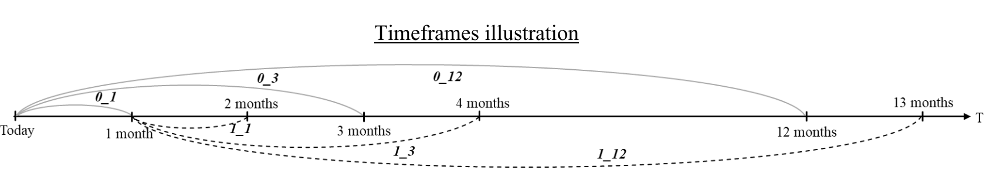
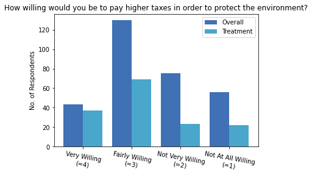
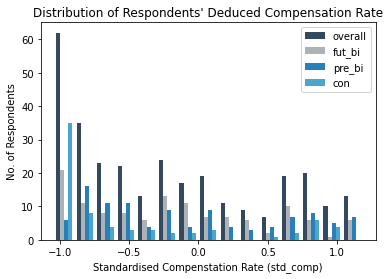
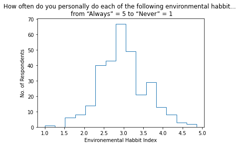
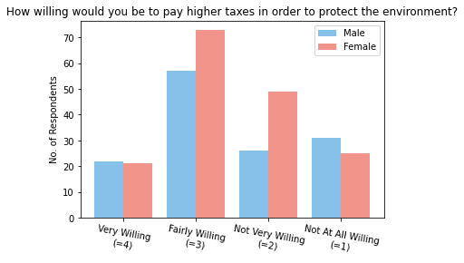
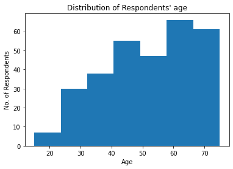
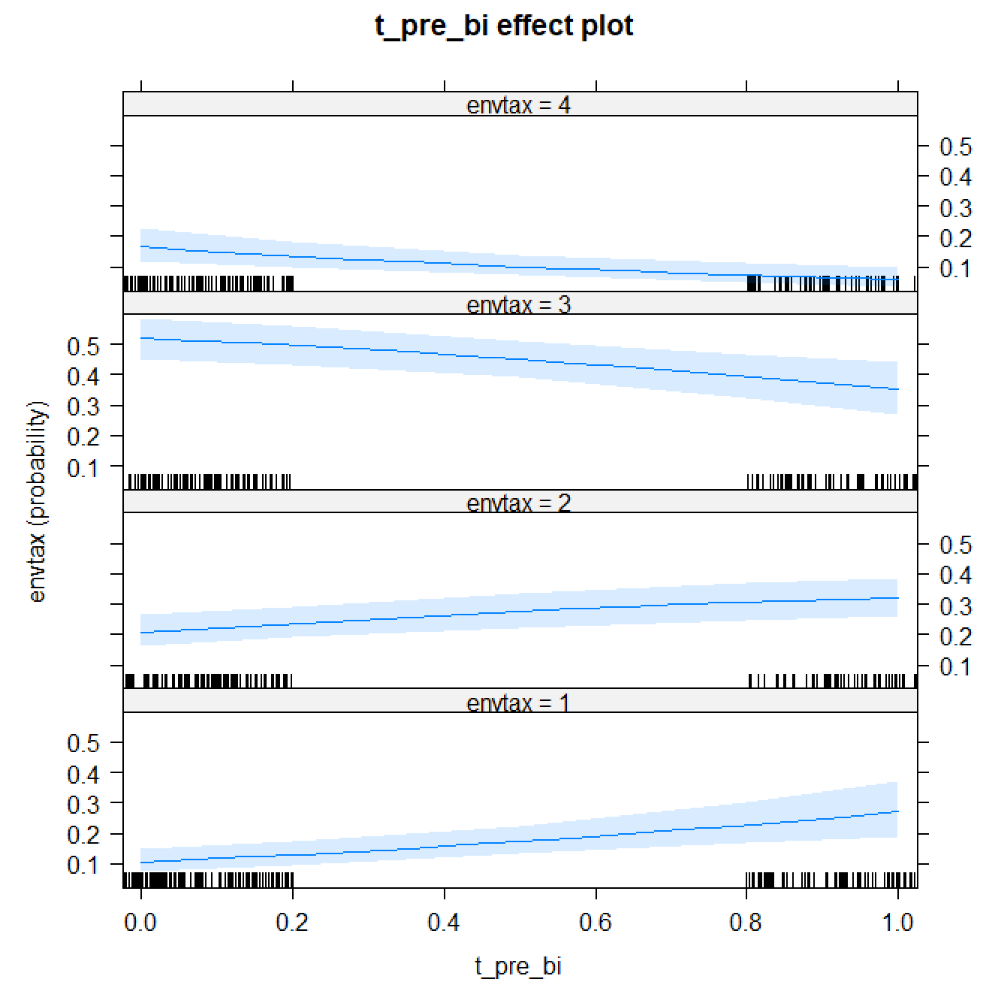
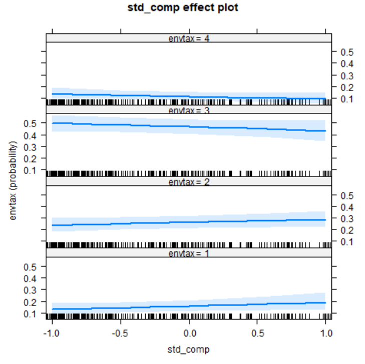

Will Procrastinators Support Environmental Tax?
Procrastination, in km could measure the distance between myself and success; in %, however, might explain why we still have no solution to Global Warming.
1. Introduction
Background
Carbon emissions are known to be the prime contributor to Global Warming. Yet, there are only 15% of the countries had adopted Carbon tax initiatives as of 2019. Among all the explanations, I am going to replicate my undergrad dissertation to prove people with present-bias (e.g. Procrastinators) are less likely to support environmental tax with Python and R in this blog post.
Time Discounting
To start with, we need to define what is carbon tax - by intentionally increasing the carbon cost, we discourage our short-term over-consumption for the long-term environmental benefit. And like an investment, time discounting plays a role when deciding whether to support a long-term tax policy. Essentially, we are putting a discount rate (%) on cash flows we will receive in the future. For example, I would prefer receiving $100 now than delaying it, as somehow, I feel like the same $100 would be of less value in a month, and it would further depreciate in a year. In other words, the more distant the environmental benefit, the less it meant to us at the present. The logic could be represented by Net Present Value (\(NPV\)), where \(t\) represents the period, \(T\) is the total number of periods, \(R_t\) is the cash flow at \(t\), and \(i\) is the interest rate: $$NPV(i,T) = \sum_{t=1}^T \frac{R_t}{(1+i)^t}$$ From the equation above, we can see two factors, time \(t\) and interest rate \(i\) that are negatively correlated with \(NPV\). In this case, we can also interpret \(i\) as the rate at which we discount values over time, or simply how impatient we are. As Amdur et al. (2015) proposed, “individuals’ discount rate would be negatively correlated with their support for environmental taxation”. Meaning people who are more impatient are less encouraged to support a long term policy like carbon tax. This is also going to be my Hypothesis 1 (H1), which is insignificantly supported in later sections, and will be seen as an evidence to employ time discounting to the subject matter.
Time Preference
While Amdur’s research was one of the first to empirically link the magnitude of time discounting with individuals’ support for environmental policy, their underlying assumption of dynamic consistency is debatable.
According to Samuelson's (1937) Discounted Utility Model, economists only assumed a constant discount rate \(i\) for analytical convenience. (For those who are interested: a constant discount rate means the marginal rate of substitution between two deferred goods separated by a fixed lag should be stable across time. Individuals with such preference would be described as having an exponential discounting function or a time consistent preference. (Laibson, 1996)) In Kirby's (1995, p.83) words:
If you would like a chocolate bar next Tuesday twice as much as an apple next Wednesday, you would like them in the same ratio for successive Tuesdays and Wednesdays a month, a year, or 10 years from now.Instead of chocolate bar and apples, I am going to compare the rate at which an individual would be indifferent between separated financial rewards in different timeframes with a titration approach.
Dynamic Inconsistency
Unlike the classical belief on time consistent preference adopted in Amdur’s research, recent studies have demonstrated dynamic inconsistency (Fedrick et al., 2002). This phenomena suggests some people might put higher weight on the present over future utility, (Present-Biased); or vice versa, (Future-Biased) (Goda et al., 2019).
For a present-bias example, you realised there was an approaching deadline on Day 1, and you thought you would start on the next day so you could enjoy the new Netflix Series for now. But on Day 2, you were impatient about the next episode and postponed your wish to work to Day 3... until the deadline. People with such procrastinating behaviour are explained in Behavioural Economics by how we would underestimate tomorrow's \((t+1)\) pleasure in today's \((t)\) point of view. Specifically, a present-biased individual would be increasingly impatient (i.e. associate higher discount rate) as an intertemporal choice approaches. From studies, such discounter would over-pursue immediate gratification, and be more likely to bear credit-card debt or have poor health status (O'Donoghue and Rabin, 2015; Meier and Sprenger, 2010; Ikeda et al., 2010).
Following this rationale, I propose individuals with such time preference would care more about the short-term sacrifices in paying additional tax, and weight less on the distant benefit of climate mitigation. Hence, Hypothesis 2 (H2) is that “individuals with present-bias would be less likely to support environmental taxation than individuals with consistent time preference”.
2. Data & Methodology
To prove the two hypotheses, I am using the household survey data from the UK Understanding Society Innovation Panel released by the Economic and social Data of the UK Data Service. (Full acknowledgement in my GitHub Repository) Every year since Wave 1 in 2008, same group of selected household representatives, who replicates the demographics in Britain, would be re-interviewed face-to-face or through the internet (Jäckle et al., 2019). As experiment modules would change in each wave, only Wave 7 (IP7) in 2014 includes all three experiments that are related to the research purposes. Among the total of 2,826 participants aged 16 or above in IP7, only 495 of them had participated in all the relevant experiment modules.
Methodology
The questionnaire results are categorised into two datasets. Hence, I will firstly focus on classifying data from different experiment modules in g_indresp_ip, and converting them into meaningful variables with Python. Then I will identify those demographics information in g_indall_ip that would be of value. Once all variables are created, I will combine them into one dataframe before running the Ordered regression model in R.
The following packages are imported to set up the Python environment:
In [1]:
# data manipulation
import pandas as pd
import numpy as np
import re
import functools
from sklearn.preprocessing import StandardScaler
# visualisation
import seaborn as sns
import matplotlib.pyplot as plt
%matplotlib inline
Data Description
To avoid confusion, I have only downloaded results from experiment modules that would be of use in a .xls file. The file is then imported as a Python Pandas dataframe with the first column "pidp", which is uniquely representing each participant as the index.
In [3]:
# create a panda dataframe by reading the csv file with the first column as index
g_indresp = pd.read_excel("g_indresp_ip.xls", index_col = 0)
As shown below, the variable series g_choice are results of the "Time and Risk Preference" module to determine interviewees' time preference and time discount rate; whereas the g_envtax series is from the "Environmental Tax" module to check if the interviewee would support environmental tax; lastly, the g_envhabit is for controlling the interviewees' attitude on environmental behaviour from the "Environmental Behaviour and Attitudes" module.
In [4]:
# print column values
print(g_indresp.columns.values)
Out [4]:
['g_choice01', 'g_choice02', 'g_choice03', 'g_choice04', 'g_choice05',
'g_choice06', 'g_choice07', 'g_choice08', 'g_choice09', 'g_choice10',
'g_choice11', 'g_choice12', 'g_choice13', 'g_choice14', 'g_choice15',
'g_choice16', 'g_choice17', 'g_choice18', 'g_choice19', 'g_choice20',
'g_choice21', 'g_choice22', 'g_choice23', 'g_choice24', 'g_choice25',
'g_choice26', 'g_choice27', 'g_choice28', 'g_choice29', 'g_choice30',
'g_choice31', 'g_choice32', 'g_choice33', 'g_choice34', 'g_choice35',
'g_choice36', 'g_choice37', 'g_choice38', 'g_choice39', 'g_choice40',
'g_choice41', 'g_choice42', 'g_choice43', 'g_choice44', 'g_choice45',
'g_choice46', 'g_choice47', 'g_choice48', 'g_choice49', 'g_choice50',
'g_choice51', 'g_choice52', 'g_choice53', 'g_choice54', 'g_choice55',
'g_choice56', 'g_choice57', 'g_choice58', 'g_choice59', 'g_choice60',
'g_choice61', 'g_choice62', 'g_choice63', 'g_choice64', 'g_choice65',
'g_choice66', 'g_choice67', 'g_choice68', 'g_choice69', 'g_choice70',
'g_choice71', 'g_choice72', 'g_envtax_a', 'g_envtax_b', 'g_envtax_c',
'g_envtax_d', 'g_envtax_e', 'g_envtax_f', 'g_envtax_g', 'g_envtax_h',
'g_envhabit1', 'g_envhabit2', 'g_envhabit3', 'g_envhabit4', 'g_envhabit5',
'g_envhabit6', 'g_envhabit7', 'g_envhabit8', 'g_envhabit9']
Dependent Variable - Environmental Taxation
In the “Environmental Tax” module, respondents were randomly assigned with one of eight questions, consisted with four different settings, each with or without an additional common treatment (i.e. 4 settings x (with + without treatment) = 8 Questions from a to h). While the treatment is going to be intuitive, the four question settings were unrelated to time discounting. They will be disregarded as if all subjects were asked by the baseline question:
How willing would you be to pay higher taxes in order to protect the environment?
Hence, a new dataframe envtax_table is created by extracting those related columns from g_indresp.
From the 10 samples below, we can see once respondents were assigned with one of the eight questions, they would be choosing their degree of Willingness To Pay environmental tax, while the rest of the seven questions would be marked as "inapplicable":
In [5]:
# filter columns with name containing "g_envtax_" to create a new dataframe
envtax_table = g_indresp.filter(regex = 'g_envtax_', axis = 1)
# take ten random samples from envtax
envtax_table.sample(10)
Out [5]:
g_envtax_a g_envtax_b g_envtax_c g_envtax_d g_envtax_e g_envtax_f g_envtax_g g_envtax_h
pidp
1700103367 inapplicable inapplicable inapplicable inapplicable inapplicable inapplicable not at all inapplicable
willing
1700425007 inapplicable inapplicable inapplicable inapplicable not at all inapplicable inapplicable inapplicable
willing
1700950651 not very inapplicable inapplicable inapplicable inapplicable inapplicable inapplicable inapplicable
willing
1701061487 inapplicable inapplicable inapplicable inapplicable inapplicable inapplicable inapplicable inapplicable
1726302446 inapplicable inapplicable inapplicable inapplicable inapplicable inapplicable not very inapplicable
willing
1700792891 proxy proxy proxy proxy proxy proxy proxy proxy
1732483652 inapplicable inapplicable inapplicable inapplicable inapplicable inapplicable inapplicable inapplicable
1700369251 inapplicable inapplicable inapplicable not at all inapplicable inapplicable inapplicable inapplicable
willing
1700503207 inapplicable very willing inapplicable inapplicable inapplicable inapplicable inapplicable inapplicable
1700180211 inapplicable inapplicable inapplicable inapplicable inapplicable inapplicable inapplicable not very willing
By creating a pivot table, the aggregate number of answers in each question are counted. The majority are choosing "Fairly Willing", followed by "Not Very Willing" in most questions. As expected, positive answers spiked when participants were receiving the common treatment in question b, d, f, h, which will be controlled in the next session.
In [6]:
# create a new empty panda dataframe
pivot_tax = pd.DataFrame()
# for each column in envtax_table, create a pivot table and append it to the newly created dataframe
for col in envtax_table:
pivot = envtax_table.pivot_table(columns=col, aggfunc="size",fill_value=0)
pivot_tax[col] = pivot
# print out the dataframe to count the unique value in each column
print(pivot_tax)
Out [6]:
g_envtax_a g_envtax_b g_envtax_c g_envtax_d \
g_envtax_a
don't know 5 10 4 15
fairly willing 77 98 69 97
inapplicable 2098 2105 2133 2099
not at all willing 68 15 49 30
not very willing 77 41 71 46
proxy 76 76 76 76
very willing 12 67 8 49
g_envtax_e g_envtax_f g_envtax_g g_envtax_h
g_envtax_a
don't know 5 10 2 14
fairly willing 80 84 93 96
inapplicable 2115 2104 2092 2105
not at all willing 58 50 60 21
not very willing 63 53 72 35
proxy 76 76 76 76
very willing 13 32 14 66
With answers from different questions, it will be the most ideal to consider each independently if data was sufficient. However, for preserving the statistical power given our small sample size, I am going to disregard the differences in settings, which are unrelated to time discounting, and treat all questions as if they were the baseline with (b) or without treatment (a). Although framing effects are inevitable, the experiment designer, Fairbrother (2017) had proved such adverse effect is minimal in his publication. Hence, I am going to consolidate the questions into a new variable envtax.
In [7]:
# define a function to check in the inputted row from the first column to the last,
# when would the cell value deviate from "inapplicable" so to return that value
def to_the_right(col):
value = "inapplicable"
col_index = 0
while value == "inapplicable" and col_index < 8:
value = col[col_index]
col_index += 1
return value
# define a function to apply to_the_right() to every row in the inputted dataframe
def clean(df):
df.loc[:,"envtax"] = df.apply(lambda col: to_the_right(col), axis = 1)
# run clean() on envtax_table
clean(envtax_table)
# take ten random samples from envtax_table
envtax_table.sample(10)
Out [7]:
g_envtax_a g_envtax_b g_envtax_c g_envtax_d g_envtax_e g_envtax_f g_envtax_g g_envtax_h envtax
pidp
1700910531 inapplicable very willing inapplicable inapplicable inapplicable inapplicable inapplicable inapplicable very willing
1701568775 inapplicable inapplicable inapplicable inapplicable inapplicable inapplicable inapplicable not very not very
willing willing
1700711971 inapplicable inapplicable inapplicable inapplicable inapplicable not at all inapplicable inapplicable not at all
willing willing
1720998486 inapplicable inapplicable inapplicable inapplicable inapplicable inapplicable inapplicable not at all not at all
willing willing
1726717246 inapplicable inapplicable not at all inapplicable inapplicable inapplicable inapplicable inapplicable not at all
willing willing
1700819475 inapplicable inapplicable inapplicable inapplicable inapplicable inapplicable fairly willing inapplicable fairly willing
1700442023 not very inapplicable inapplicable inapplicable inapplicable inapplicable inapplicable inapplicable not very
willing willing
1701483087 inapplicable inapplicable inapplicable inapplicable inapplicable inapplicable inapplicable fairly willing fairly willing
1700559651 inapplicable inapplicable inapplicable inapplicable inapplicable inapplicable inapplicable inapplicable inapplicable
1721290886 inapplicable inapplicable inapplicable inapplicable inapplicable inapplicable inapplicable inapplicable inapplicable
Unfortunately, not every interviewees had joint the "Environmental Tax" module. Absentees or participants with inaudible answer, e.g. "Don't know", would be dropped from envtax_table.
In [8]:
# drop rows if the value in envtax is not recognise in the list
envtax_table.drop(envtax_table[~envtax_table.envtax.isin(["not at all willing", "not very willing", "fairly willing", "very willing"])].index , inplace=True)
# call out the pivot table to count the unique value in the column
envtax_table.pivot_table(columns="envtax", aggfunc="size",fill_value=0)
Out [8]:
envtax
fairly willing 693
not at all willing 351
not very willing 458
very willing 261
dtype: int64
The final step before finalising the dependent variable, envtax is to transform the categorical text data into categorical numerical data as below:
- Very willing (= 4)
- Fairly Willing (= 3)
- Not Very Willing (= 2)
- Not at All Willing (= 1)
In [9]:
# creating a dictionary to assign numerically ordered values to the categorical answers
encoding = {"envtax": {"very willing": 4, "fairly willing": 3, "not very willing": 2, "not at all willing": 1}}
# replacing the string with the corresponding numeric values
envtax_table = envtax_table.replace(encoding)
Independent Variable - Treatment
As mentioned, a random treatment was imposed in the “Environmental Tax” module which introduced an additional condition at the end of the question for subjects’ Willingness To Pay environmental tax (i.e. b, d, f, h):
…, if the government reduced other taxes you pay by the same amount?For simplicity, treatment will be seen as a direct reduction on proximate financial costs, which as mentioned, has motivated more participants to be more willing to pay.
A dummy variable treatment is created with value = 1 for subjects who had received the treatment in question b, d, f, h; and = 0 otherwise.
In [10]:
# define a funtion to count in the inputted row,
# how many columns from left to right have value "inapplicable" until a deviation is detected
# if the number of counts is equal to 2 or 4 or 6 or 8, assign 1 to the new variable, otherwise, assign 0
def treat(col):
value = "inapplicable"
count = 0
col_index = 0
while value == "inapplicable" and col_index < 9:
value = col[col_index]
count += 1
col_index += 1
if count == 2 or count == 4 or count == 6 or count == 8:
treatment = 1
elif count == 9:
treatment = ""
else:
treatment = 0
return treatment
# define a function to apply treat to every row in the inputted dataframe
def treatment(df):
df.loc[:, "treatment"] = df.apply(lambda col: treat(col), axis = 1)
# run treatment() on evtax_table
treatment(envtax_table)
# take ten random samples from envtax_table
envtax_table.sample(10)
Out [10]:
g_envtax_a g_envtax_b g_envtax_c g_envtax_d g_envtax_e g_envtax_f g_envtax_g g_envtax_h envtax treatment
pidp
1701842807 not very inapplicable inapplicable inapplicable inapplicable inapplicable inapplicable inapplicable 2 0
willing
1719924092 inapplicable inapplicable fairly willing inapplicable inapplicable inapplicable inapplicable inapplicable 3 0
1700728967 inapplicable inapplicable inapplicable inapplicable not very inapplicable inapplicable inapplicable 2 0
willing
1726560926 inapplicable inapplicable inapplicable inapplicable inapplicable inapplicable inapplicable fairly willing 3 1
1719924132 inapplicable inapplicable fairly willing inapplicable inapplicable inapplicable inapplicable inapplicable 3 0
1700894891 inapplicable very willing inapplicable inapplicable inapplicable inapplicable inapplicable inapplicable 4 1
1713668132 inapplicable inapplicable inapplicable inapplicable not at all inapplicable inapplicable inapplicable 1 0
willing
1721596886 inapplicable inapplicable inapplicable inapplicable not at all inapplicable inapplicable inapplicable 1 0
willing
1700499127 inapplicable inapplicable inapplicable fairly willing inapplicable inapplicable inapplicable inapplicable 3 1
1717496452 inapplicable inapplicable inapplicable inapplicable not at all inapplicable inapplicable inapplicable 1 0
willing
Independent Variable - Time Discounting
In the “Time Preference and Risk Aversion” module respondents were asked 6 sets of 12 questions based on hypothetical financial rewards with 10% chance of receiving an actual payment for one of their choices to ensure genuine participation. Check Appendix B for full set of questions.
In all 72 questions, respondents were asked to choose either receiving a Sooner & Smaller reward (hereafter SS) or a Later & Larger reward (hereafter LL) with 6 different timeframes in the form of i_j, specified in each set. For i defines when would SS be received. Either in ‘near’ term (i.e. receive SS today: i = 0; grey line in illustration), or in ‘distant’ term (i.e. receive SS with 1-month front end delay i = 1; dotted line in illustration); for j indicates the lag between SS and LL. To receive LL j month(s) after SS, where j = 1, 3 or 12; line span in illustration.
The difference between Smaller and Larger reward are interpreted as compensation for waiting. (i.e. Range of compensation offered varies in proportion to lag length j as shown in Appendix B.) The percentage difference in reward will be the compensation rate (hereafter comp_rate) offered in each question. For example, for Choice01 in 1_1,
Between Option (A): Receiving £100 in 1 month and Option (B): Receiving £100.42 in 2 months, which option do you prefer?if an individual preferred SS, comp_rate of 0.42% would be insufficient, and a higher comp_rate should be offered to compensate that individual for waiting 1 more month.
To deduce an individual’s valuation on waiting in each timeframe, however, the titration approach was adopted (Admur et al., 2015). Within the same set of 12 questions, the amount of LL offered would increase marginally while keeping SS and i_j unchanged. As comp_rate increases, respondents were expected to switch from choosing SS to LL eventually (Kirby et al., 1999).
Hence, if an individual chose SS for Choice01 (comp_rate of 0.42% for waiting 1 month) but preferred LL for Choice02 (comp_rate of 0.83% for waiting 1 month), there should be a comp_rate between 0.42% to 0.83% that makes the individual indifferent between SS and LL. For computation, I will speculate the preferred comp_rate for each i_j at around the mid-point. (e.g. 0.83%/2) Intuitively, comp_rate represents the minimum compensation rate or the time discount rate required to convince that individual to wait for a specific timeframe.
Six dataframes periodi_j were created to correspond with each timeframe.
In [11]:
# filter the columns in g_indresp by RegEx to create six new dataframes
period1_2 = g_indresp.filter(regex = 'g_choice0[1-9]|g_choice1[0-2]', axis = 1)
period1_4 = g_indresp.filter(regex = 'g_choice1[3-9]|g_choice2[0-4]', axis = 1)
period1_13 = g_indresp.filter(regex = 'g_choice2[5-9]|g_choice3[0-6]', axis = 1)
period0_1 = g_indresp.filter(regex = 'g_choice3[7-9]|4[0-8]', axis = 1)
period0_3 = g_indresp.filter(regex = 'g_choice49|g_choice5[0-9]|g_choice60', axis = 1)
period0_12 = g_indresp.filter(regex = 'g_choice6[1-9]|g_choice7[0-2]', axis = 1)
# create a list referring to the six new dataframes
period = [period1_2, period1_4, period1_13, period0_1, period0_3, period0_12]
# take ten random samples from one of the six dataframes
period0_1.sample(10)
Out [11]:
g_choice37 g_choice38 g_choice39 g_choice40 g_choice41 g_choice42 g_choice43 g_choice44 g_choice45 g_choice46 g_choice47 g_choice48
pidp
1713817692 inapplicable inapplicable inapplicable inapplicable inapplicable inapplicable inapplicable inapplicable inapplicable inapplicable inapplicable inapplicable
1700500491 inapplicable inapplicable inapplicable inapplicable inapplicable inapplicable inapplicable inapplicable inapplicable inapplicable inapplicable inapplicable
1700141455 proxy proxy proxy proxy proxy proxy proxy proxy proxy proxy proxy proxy
1720651652 inapplicable inapplicable inapplicable inapplicable inapplicable inapplicable inapplicable inapplicable inapplicable inapplicable inapplicable inapplicable
1700360411 inapplicable inapplicable inapplicable inapplicable inapplicable inapplicable inapplicable inapplicable inapplicable inapplicable inapplicable inapplicable
1701575567 option a: option a: option a: option b: option b: option b: option b: option b: option b: option b: option b: option b:
receiving receiving receiving receiving receiving receiving receiving receiving receiving receiving receiving receiving
�100 today �100 today �100 today �101.67 in �102.08 in �102.50 in �103.33 in �104.17 in �105 in �106.67 in �108.33 in �112.50 in
1 month 1 month 1 month 1 month 1 month 1 month 1 month 1 month 1 month
1701491247 option a: option a: option a: option a: option a: option a: option a: option a: option b: option b: option b: option b:
receiving receiving receiving receiving receiving receiving receiving receiving receiving receiving receiving receiving
�100 today �100 today �100 today �100 today �100 today �100 today �100 today �100 today �105 in �106.67 in �108.33 in �112.50 in
1 month 1 month 1 month 1 month
1702475366 inapplicable inapplicable inapplicable inapplicable inapplicable inapplicable inapplicable inapplicable inapplicable inapplicable inapplicable inapplicable
1721923246 inapplicable inapplicable inapplicable inapplicable inapplicable inapplicable inapplicable inapplicable inapplicable inapplicable inapplicable inapplicable
1700544691 inapplicable inapplicable inapplicable inapplicable inapplicable inapplicable inapplicable inapplicable inapplicable inapplicable inapplicable inapplicable
As shown in the sampling above, some interviewees did not take part in this experiment module, hence, dropping them from the data:
In [12]:
# identified the rows with inaudible values in g_choice01
drop_index_choice = g_indresp[g_indresp["g_choice01"].str.contains("inapplicable|proxy")].index
# drop the identified rows by index in each six dataframes
for df in period:
df.drop(drop_index_choice, inplace = True)
Before I deduce the compensation rate, I have to transform all cells' value from a string e.g. option A: receiving �100 today, into a numeric value 100. Then I will calculate the percentage difference between the first column with the second, the second column with the third, etc. until the percentage difference is higher than 0, so to halve that value and return a new variable comp_rate.
In [13]:
# define a function to loop across every rows and columns in a dataframe to extract and replace with numeric values in the cell
def extract(df):
for col in range(df.shape[1]):
for row in range(df.shape[0]):
cell = df.iloc[row, col]
number = re.findall(r"-?\d+\.?\d*", cell)
df.iat[row, col] = number[0]
# define a function, comp_cal(), that apply the rate formula on the first and second column, the second and third column, etc. until rate is no longer 0
def comp_cal(col):
comp = 0
col_index = 0
rate = (lambda now, later: (later - now)/(now*2))
while comp == 0 and col_index < 11:
comp = rate(float(col[col_index]), float(col[col_index + 1]))
col_index += 1
return comp
# define a function to apply the comp_cal() to each row in a dataframe
def compensation(df):
df.loc[:, "comp_rate"] = df.apply(lambda col: comp_cal(col), axis = 1)
# apply extract() and compensation() to each dataframe in period
for df in period:
extract(df)
compensation(df)
# take ten random samples from one of the six dataframes
period0_1.sample(10)
Out [13]:
g_choice37 g_choice38 g_choice39 g_choice40 g_choice41 g_choice42 g_choice43 g_choice44 g_choice45 g_choice46 g_choice47 g_choice48 comp_rate
pidp
1700163887 100 100 100 100 100 100 100 100 100 100 100 100 0.0000
1701108411 100 100 100 100 100 100 100 100 105 106.67 108.33 112.50 0.0250
1701429367 100 100 100 100 100 100 100 104.17 105 106.67 108.33 112.50 0.0209
1701672807 100 100 100 100 100 100 100 100 100 100 100 100 0.0000
1701704771 100 100 100 100 100 100 100 104.17 105 106.67 108.33 112.50 0.0209
1700476007 100 100 100 100 100 100 100 100 100 100 100 100 0.0000
1700864967 100 100 100 100 100 100 100 100 100 100 100 100 0.0000
1701575567 100 100 100 101.67 102.08 102.50 103.33 104.17 105 106.67 108.33 112.50 0.0084
1723181246 100 100 100 100 100 100 100 100 100 100 100 100 0.0000
1700096567 100 100 100 100 100 100 100 100 100 100 100 100 0.0000
But for respondents who persisted in SS throughout, the above mechanism would be inapplicable as their compensation required lay above the highest offered in the 12th question in the set. Hence, those with discount rate exceeded the upper bound of the experimental design, would have comp_rate estimated at the upper bound.
In [14]:
# create lists referring to the corresponding periods dataframes with different lag length
period1 = [period0_1, period1_2]
period3 = [period0_3, period1_4]
period12 = [period0_12, period1_13]
# replace the comp_rate for those respondents who persisted in SS with the upper bound
for df in period1:
df.comp_rate.replace(0,0.1250, inplace = True)
for df in period3:
df.comp_rate.replace(0,0.3750, inplace = True)
for df in period12:
df.comp_rate.replace(0,1.5000, inplace = True)
# take five random samples from one of the six dataframes
period0_1.sample(5)
Out [14]:
g_choice37 g_choice38 g_choice39 g_choice40 g_choice41 g_choice42 g_choice43 g_choice44 g_choice45 g_choice46 g_choice47 g_choice48 comp_rate
pidp
1722888846 100 100 100 100 100 100 103.33 104.17 105 106.67 108.33 112.50 0.01665
1700532447 100 100 100 100 100 100 100 100 100 100 100 100 0.1250
1700061891 100 100 100 100 100 100 100 100 100 100 100 100 0.1250
1721046046 100 100 100 100 100 100 100 100 100 100 100 100 0.1250
1700577331 100 100 100 100 100 100 100 100 100 100 100 112.50 0.0625
After deducing comp_rate in each period, I will consolidate them into a new dataframe, comp, as below:
In [15]:
# create a new list with items to be referenced as names of the new columns
comp_list = ["comp1_2", "comp1_4", "comp1_13", "comp0_1", "comp0_3", "comp0_12"]
# create an empty dictionary for later
comp_dic = {}
# by zipping the two reference lists, comp_list and period
# items in the two lists are looped to fill in the new dictionary
for x, y in list(zip(comp_list, period)):
comp_dic[x] = y.loc[:,"comp_rate"]
# use the dictionary to create a new dataframe, comp
comp = pd.DataFrame(comp_dic)
# take five random samples from comp
comp.sample(5)
Out [15]:
comp1_2 comp1_4 comp1_13 comp0_1 comp0_3 comp0_12
pidp
1700325727 0.006250 0.050000 0.15000 0.004150 0.025000 0.10000
1700855447 0.008350 0.031250 0.10000 0.016650 0.025000 0.05000
1700638527 0.002041 0.006173 0.02381 0.002041 0.006173 0.02381
1723541646 0.020850 0.006173 0.02381 0.062500 0.075000 0.20000
1721046046 0.125000 0.375000 1.50000 0.125000 0.375000 1.50000
The sample mean E(.) and sample standard deviation σ(.) as shown:
In [16]:
# call the aggregated mean and standard deviation of each column
comp.agg(['mean','std'])
Out [16]:
comp1_2 comp1_4 comp1_13 comp0_1 comp0_3 comp0_12
mean 0.062949 0.170676 0.540580 0.069469 0.169673 0.468039
std 0.053565 0.157790 0.580647 0.051519 0.153347 0.557025
To test H1, it would be impractical to separately regress the six comp_rate from different timeframes against the dependent variable. Therefore, a continuous independent variable, standardised compensation rate (std_comp) is created. By obtaining subjects’ standard score in each comp_rate, I compare it with the sample mean in that timeframe. Next, take a simple average of all six standard scores to construct an i_j averaging proxy which should reflect the general compensation rate of a subject relative to the sample (Ikeda, et al. 2010). $$std\_comp = \frac{1}{6}\sum_{i=0,1}\sum_{j=1,3,12} \frac{comp_{i\_j}-E(comp_{i\_j})}{\sigma(comp_{i\_j})}$$
In [17]:
# standardised the value in each column
for col in comp_list:
comp[col] = StandardScaler().fit_transform(comp[[col]])
# take a simple average and append the value in a new column
comp["std_comp"] = comp.iloc[:, 0:6].sum(1)/6
Out [17]:
comp1_2 comp1_4 comp1_13 comp0_1 comp0_3 comp0_12 std_comp
pidp
1701061487 -0.008391 -0.448343 1.653927 1.078909 1.340265 1.854421 0.911798
1700740531 -0.008391 -0.765526 -0.802604 -0.135404 -0.781161 -0.751210 -0.540716
1701289967 -1.138181 -1.043551 -0.890851 -1.310053 -1.067241 -0.798274 -1.041358
1722916086 -0.709154 -0.765526 -0.500925 -0.863991 -0.781161 -0.661361 -0.713686
1725282526 1.159547 1.296167 1.653927 -1.310053 -1.067241 -0.798274 0.155679
Independent Variable - Time Preference
Subjects’ time preference are categorised by comparing their timeframe specific comp_rate in ‘near’ term (i.e. i = 0) and in ‘distant’ term (i.e. i = 1) of the same lag j.
Firstly, if an individual required more compensation for postponing a reward today than postponing a reward with a front-end delay of the same lag (i.e. comp0_j > comp1_j), that individual would be subjected to "present-bias". Meaning the subject would give higher priority to events closer in time.
Secondly, if comp0_j < comp1_j, the subject would be categorised as future-biased whose time discount rate increases with time and would put higher weight on distant events. Takeuchi (2011) found the majority of his observations were "future-biased", represented by an inverse shaped discount function.
Thirdly, if comp0_j = comp1_j, , the subject would value near and distant events with a time "consistent" preference, hence, required the same compensation for postponing rewards today or postponing rewards with a front-end delay if the lag length were the same.
Lastly, in cases when respondents had persistently preferred SS in any set, with comp_rate assumed at upper bound, their corresponding time preference would be unidentifiable, namely “unidentifiable".
In [18]:
# create another dataframe, time, with comp_dic in In [16]
time = pd.DataFrame(comp_dic)
# create a new variable for j = 1 and assign value with the logical arguments presented above
time["time_1"] = np.where(time["comp1_2"] < time["comp0_1"], "pre_bi", np.where(time["comp1_2"] > time["comp0_1"], "fut_bi", np.where((time["comp1_2"] == time["comp0_1"]) & (time["comp0_1"] == 0.125), "unidentifiable", "con")))
# create a new variable for j = 3 and assign value with the logical arguments presented above
time["time_3"] = np.where(time["comp1_4"] < time["comp0_3"], "pre_bi", np.where(time["comp1_4"] > time["comp0_3"], "fut_bi", np.where((time["comp1_4"] == time["comp0_3"]) & (time["comp0_3"] == 0.375), "unidentifiable", "con")))
# create a new variable for j = 12 and assign value with the logical arguments presented above
time["time_12"] = np.where(time["comp1_13"] < time["comp0_12"], "pre_bi", np.where(time["comp1_13"] > time["comp0_12"], "fut_bi", np.where((time["comp1_13"] == time["comp0_12"]) & (time["comp0_12"] == 1.5), "unidentifiable", "con")))
# take five random samples from time
time.sample(5)
Out [18]:
comp1_2 comp1_4 comp1_13 comp0_1 comp0_3 comp0_12 time_1 time_3 time_12
pidp
1700361771 0.012500 0.025000 0.125 0.062500 0.0500 0.075 pre_bi pre_bi fut_bi
1701527967 0.002041 0.012500 0.050 0.002041 0.0125 0.050 con con con
1700399847 0.002041 0.006173 0.125 -0.002091 0.1875 0.250 fut_bi pre_bi pre_bi
1726615246 0.025000 0.050000 0.125 0.033350 0.0625 0.150 pre_bi pre_bi pre_bi
1700238007 -0.002091 0.375000 1.500 0.125000 0.3750 1.500 pre_bi unidentifiable unidentifiable
After applying the logical arguments to identify participants'time preferences in each lag length j, only the relevant columns in the dataframe, time, would be left for simplicity:
In [19]:
# create an empty column, time_pre, for later
time["time_pre"] = ""
# select specific columns from the dataframe
time = time[["time_1", "time_3", "time_12", "time_pre"]]
# take another five random samples from the updated time dataframe
time.sample(5)
Out [19]:
time_1 time_3 time_12 time_pre
pidp
1723779646 pre_bi unidentifiable unidentifiable
1700776567 fut_bi fut_bi con
1700001367 fut_bi con con
1726771646 pre_bi fut_bi fut_bi
1700243447 fut_bi fut_bi fut_bi
Accordingly, all respondents would have three time preference labels for each lag length j of either "present-bias", "futture-bias", "consistent", "unidentifiable". The count by category is summarised in the pivot table below:
In [20]:
# create a pivot table that count the occurence of each value divided by time_1, time_3 and time_12
table = time.pivot_table(index = ['time_1'], columns=['time_3','time_12'], aggfunc='count')
# call out the pivot table
table
Out [20]:
time_pre
time_3 con fut_bi pre_bi unidentifiable
time_12 con fut_bi pre_bi con fut_bi pre_bi unidentifiable con fut_bi pre_bi unidentifiable con fut_bi pre_bi unidentifiable
time_1
con 30.0 14.0 4.0 5.0 15.0 6.0 1.0 6.0 6.0 2.0 1.0 1.0 1.0 1.0 NaN
fut_bi 8.0 11.0 NaN 7.0 36.0 5.0 1.0 2.0 12.0 6.0 1.0 1.0 2.0 2.0 2.0
pre_bi 6.0 14.0 7.0 5.0 25.0 3.0 NaN 11.0 35.0 31.0 7.0 2.0 4.0 3.0 11.0
unidentifiable 3.0 5.0 2.0 5.0 19.0 3.0 NaN 6.0 4.0 3.0 3.0 15.0 22.0 13.0 62.0
Although ideally, the three labels should be coherent to demonstrate a comprehensible general time preference, deviation were observed in most subjects. As empirical researches rarely evaluate time preferences with three different lag lengths, regrettably, original assumptions have to be made to relax the grouping criteria.
- For the weakly coherent scenario, if any two of the three labels are the same, the majority would be adopted as the general time preference.
- For the weakly identifiable scenario, if any two labels are "unidentifiable", the remaining identifiable one will be deemed as the general time preference.
In [21]:
# create a new column, time_pre, and loop through all rows to fill the cell value defined by the criteria above
pre = ["con", "pre_bi", "fut_bi"]
for pre in pre:
for i in time.index:
if time.loc[i, "time_1"] == pre and time.loc[i, "time_3"] == pre:
time.loc[i, "time_pre"] = pre
elif time.loc[i, "time_1"] == pre and time.loc[i, "time_12"] == pre:
time.loc[i, "time_pre"] = pre
elif time.loc[i, "time_3"] == pre and time.loc[i, "time_12"] == pre:
time.loc[i, "time_pre"] = pre
elif time.loc[i, "time_1"] == pre and time.loc[i, "time_3"] == "unidentifiable" and time.loc[i, "time_12"] == "unidentifiable":
time.loc[i, "time_pre"] = pre
elif time.loc[i, "time_1"] == "unidentifiable" and time.loc[i, "time_3"] == "unidentifiable" and time.loc[i, "time_12"] == pre:
time.loc[i, "time_pre"] = pre
elif time.loc[i, "time_1"] == "unidentifiable" and time.loc[i, "time_3"] == pre and time.loc[i, "time_12"] == "unidentifiable":
time.loc[i, "time_pre"] = pre
else:
continue
# assign the value "unidentiable" to those empty cells
for i in time.index:
if time.loc[i, "time_pre"] == "":
time.loc[i, "time_pre"] = "unidentifiable"
# take another five random samples from the updated time dataframe
time.sample(5)
Out [21]:
time_1 time_3 time_12 time_pre
pidp
1700992127 pre_bi unidentifiable unidentifiable pre_bi
1700914611 unidentifiable unidentifiable unidentifiable unidentifiable
1701338943 unidentifiable con con con
1700157091 pre_bi pre_bi fut_bi pre_bi
1701673495 fut_bi fut_bi con fut_bi
After deducing a time preference for each subject, dummy variables (i.e. with value = 1 if the subject fits the category; otherwise value = 0) are created for later regression. Observations with "unidentifiable" time preference will be dropped.
In [22]:
# break down the column, time_pre, in which categorical values are used to create new columns with dummy values
time = pd.get_dummies(time, prefix = "t", prefix_sep = "_", columns = ["time_pre"])
# drop the rows with unidentifiable time_pre
time.drop( time[(time["t_unidentifiable"] == 1) ].index , inplace=True)
# take another five random samples from the updated time dataframe
time.sample(5)
Out [22]:
time_1 time_3 time_12 t_con t_fut_bi t_pre_bi t_unidentifiable
pidp
1725792446 pre_bi pre_bi fut_bi 0 0 1 0
1700582767 unidentifiable fut_bi fut_bi 0 1 0 0
1723262966 unidentifiable unidentifiable con 1 0 0 0
1724670486 con pre_bi pre_bi 0 0 1 0
1700238687 unidentifiable unidentifiable pre_bi 0 0 1 0
Independent Variable - Environmental Morale
It is believed that the higher an individual’s environmental morale, the more often environmentally friendly behaviour would be conducted, and the more likely environmental tax would be supported by the individual. Hence, the “Environmental Behaviour and Attitude” module is used to measure if subjects would derive intrinsic values from protecting the environment.
In [23]:
# filter the columns in g_indresp by RegEx to create a new dataframe
envhabit = g_indresp.filter(regex = 'g_envhabit[2,4-9]', axis = 1)
# drop the rows with unidentifiable envhabit
envhabit.drop(envhabit[~envhabit.g_envhabit2.isin(["always", "very often", "quite often", "not very often", "never", "n/a, can't do this", "don't know"])].index , inplace=True)
# take five random samples from the updated time dataframe
envhabit.sample(5)
Out [23]:
g_envhabit2 g_envhabit4 g_envhabit5 g_envhabit6 g_envhabit7 g_envhabit8 g_envhabit9
pidp
1700539927 never always never never always quite often quite often
1701822411 very often very often never very often always never never
1700975807 always very often never not very often never not very often quite often
1700870411 always quite often quite often very often always not very often never
1721365686 quite often very often not very often quite often not very often quite often never
With reference to Barile et al. (2015), a continuous independent variable, Environmental Habit Index envhabit, is created by firstly assigning ordered numeric values to subjects’ self-reported frequency of performing different pro-environment habits with “Always” = 5 to “Never” = 1, then taking the simple average of the aggregated values as follow:
In [24]:
# creating new columns reflecting the self-assigned numeric values of their corresponding answers to different environmental habits
new_col = ["envhabit_2", "envhabit_4", "envhabit_5", "envhabit_6", "envhabit_7", "envhabit_8", "envhabit_9"]
new_index = 0
for name in envhabit.columns:
score = []
for participant in envhabit[name]:
if participant == "always":
score.append(5)
elif participant == "very often":
score.append(4)
elif participant == "quite often":
score.append(3)
elif participant == "not very often":
score.append(2)
else:
score.append(1)
envhabit[new_col[new_index]] = score
new_index += 1
# taking simple average on the newly created columns with numeric values
envhabit["envhabit"] = envhabit.iloc[:, 7:14].sum(1)/7
# take another five random samples from the updated time dataframe
envhavit.sample(5)
Out [24]:
g_envhabit2 g_envhabit4 g_envhabit5 g_envhabit6 g_envhabit7 g_envhabit8 g_envhabit9 envhabit_2 envhabit_4 envhabit_5 envhabit_6 envhabit_7 envhabit_8 envhabit_9 envhabit
pidp
1720916846 very often very often quite often very often always never never 4 4 3 4 5 1 1 3.142857
1719108092 quite often quite often never don't know always quite often not very often 3 3 1 1 5 3 2 2.571429
1724725006 always very often never very often never not very often never 5 4 1 4 1 2 1 2.571429
1700861567 always quite often never never very often very often very often 5 3 1 1 4 4 4 3.142857
1701103651 always not very often not very often not very often quite often always always 5 2 2 2 3 5 5 3.428571
Demographics
Another dataset, g_indall, containing background information of each participant is imported to extract their corresponding age and gender.
In [25]:
# read the .xls document with the first column being the Index
g_indall = pd.read_excel("g_indall_ip.xls", index_col = 0)
# create a dataframe by filtering relevenat columns from g_indall
other = g_indall.filter(regex = 'g_agegr10_dv|g_sex', axis = 1)
# identify and count the values in g_sex and g_agegr10_dv
other.g_sex.value_counts()
other.g_agegr10_dv.value_counts()
Out [25]:
female 1870
male 1749
missing 1
don't know 1
Name: g_sex, dtype: int64
50-59 years old 548
40-49 years old 504
60-69 years old 500
10-19 years old 469
70 years or older 411
0-9 years old 396
30-39 years old 395
20-29 years old 361
Missing 37
Name: g_agegr10_dv, dtype: int64
As shown, there were some missing values which would be dropped from the observations.
In [26]:
# dropping rows by index identified with missing values
other.drop(other[other.g_sex.isin(["don't know","missing"])].index , inplace=True)
other.drop(other[other.g_agegr10_dv.isin(["don't know","missing"])].index , inplace=True)
# take five random samples from the updated dataframe
other.sample(5)
Out [26]:
g_sex g_agegr10_dv
pidp
1729110852 male 70 years or older
1716422052 female 40-49 years old
1700027891 male 60-69 years old
1726452046 female 30-39 years old
1719788132 male 0-9 years old
For later regression, two dummy variables g_sex_male and g_sex_female are created for identifying the gender of a respondent. Also, in the questionnaire, participants were answering their age with bands of 10 years. Hence, a speculation is made to assign the age value at the mid-point e.g. assigning 35 to participants answering g_agegr10_dv with "30-39 years old".
In [27]:
# creating two dummy variables from the value in g_sex with the prefix "_"
other = pd.get_dummies(other, prefix_sep = "_", columns = ["g_sex"])
# creating a dictionary and replace the keys with their corresponding values
encoding = {"g_agegr10_dv": {"0-9 years old": 5, "10-19 years old": 15, "20-29 years old": 25, "30-39 years old": 35, "40-49 years old": 45, "50-59 years old": 55, "60-69 years old": 65, "70 years or older": 75}}
other = other.replace(encoding)
# take another five random samples from the updated dataframe
other.sample(5)
Out [27]:
g_agegr10_dv g_sex_female g_sex_male
pidp
1701245099 5 0 1
1700353607 35 1 0
1701077127 65 0 1
1721936886 65 1 0
1731538492 75 1 0
After extracting the relevant columns into separate datasets and transformed with audible numeric values, they are loaded into a new dataframe, rae.
In [28]:
# creating a list of names of the dataframes created thus far
data_frames = [envtax_table, comp, time, envhabit, other]
# inner joining the datafames with names from the list by the common index value, pidp
df = functools.reduce(lambda x, y: pd.merge(x, y, on = "pidp", how = "inner"), data_frames)
# list out the columns in the new consolidated dataframe
df.columns
Out [28]:
Index(['g_envtax_a', 'g_envtax_b', 'g_envtax_c', 'g_envtax_d', 'g_envtax_e',
'g_envtax_f', 'g_envtax_g', 'g_envtax_h', 'envtax', 'treatment',
'comp1_2', 'comp1_4', 'comp1_13', 'comp0_1', 'comp0_3', 'comp0_12',
'std_comp', 'time_1', 'time_3', 'time_12', 't_con', 't_fut_bi',
't_pre_bi', 't_unidentifiable', 'g_envhabit2', 'g_envhabit4',
'g_envhabit5', 'g_envhabit6', 'g_envhabit7', 'g_envhabit8',
'g_envhabit9', 'envhabit_2', 'envhabit_4', 'envhabit_5', 'envhabit_6',
'envhabit_7', 'envhabit_8', 'envhabit_9', 'envhabit', 'g_agegr10_dv',
'g_sex_female', 'g_sex_male'],
dtype='object')
From the list of columns above, select those that would be use in the regression.
In [29]:
# create a new dataframe with columns from df
rae = df[["envtax","treatment", "std_comp", "t_fut_bi", "t_pre_bi", "envhabit", "g_agegr10_dv", "g_sex_male"]]
# take five random samples from the newly created dataframe
rae.sample(5)
Out [29]:
envtax treatment std_comp t_fut_bi t_pre_bi envhabit g_agegr10_dv g_sex_male
pidp
1700214211 1 0 -0.276368 0 1 2.428571 55 1
1724119646 4 1 -0.110438 1 0 3.428571 75 1
1723310446 1 1 -0.377052 1 0 2.285714 65 1
1701727207 3 1 -0.177028 1 0 2.285714 45 0
1706126962 4 1 -0.996040 0 0 3.571429 25 0
After the extracting and transforming with Python, the dataset would be exported as a separate .csv file for later interpretation.
In [30]:
# exporting rae as a .csv file
rae.to_csv(r"C:\Users\lauwi\Desktop\Data\Python\RAE\RAE.csv", index = True)
3. Visualisation & Summary
But before we begin the regression in R, we are going to stick with Python to understand the data.
In [31]:
# calling out summary statistics of the consolidated dataset
rae.describe()
Out [31]:
envtax treatment std_comp t_fut_bi t_pre_bi envhabit g_agegr10_dv g_sex_male
count 304.000000 304.000000 304.000000 304.000000 304.000000 304.000000 304.000000 304.000000
mean 2.526316 0.496711 -0.213711 0.404605 0.355263 2.968985 52.993421 0.447368
std 0.950576 0.500814 0.685276 0.491625 0.479382 0.600491 17.107309 0.498042
min 1.000000 0.000000 -1.041358 0.000000 0.000000 1.000000 15.000000 0.000000
25% 2.000000 0.000000 -0.827215 0.000000 0.000000 2.571429 45.000000 0.000000
50% 3.000000 0.000000 -0.358651 0.000000 0.000000 3.000000 55.000000 0.000000
75% 3.000000 1.000000 0.302730 1.000000 1.000000 3.321429 65.000000 1.000000
max 4.000000 1.000000 1.181721 1.000000 1.000000 4.857143 75.000000 1.000000
As described from the table above, only 304 observations left after dropping those missing or inaudible entries. The average age of the remaining samples is 53 years old with 45% being male. Moreover, exactly half of the observations had received the treatment in the "Environment Tax" module which was meant to be randomly assigned to interviewees. This might be an indication that my active filtering does not alter much of the sample population distribution.
In [32]:
envtax = ["Very Willing\n(=4)", "Fairly Willing\n(=3)", "Not Very Willing\n(=2)", "Not At All Willing\n(=1)"]
xpos = np.arange(len(envtax))
plt.bar(xpos-0.2, rae.envtax.value_counts().sort_index(ascending=False), width=0.4, color = "#1d58a7d8", label="Overall")
plt.bar(xpos+0.2, rae[rae["treatment"] == 1].envtax.value_counts().sort_index(ascending=False), width=0.4, color = "#4aa6ca", label="Treatment")
plt.xticks(xpos, envtax, rotation = "350")
plt.ylabel("No. of Respondents")
plt.title("How willing would you be to pay higher taxes in order to protect the environment?")
plt.legend()

As shown in the diagram above, the majority of participants chose fairly willing (=3) to pay higher taxes to protect the environment regardless of settings. But with the treatment, participants are more likely to be very willing to pay (=4) and less likely to give a negative responses (=1 or =2) in line with Jagers et al. (2019).
In [33]:
plt.hist([rae.std_comp, rae[rae["t_fut_bi"] == 1].std_comp, rae[rae["t_pre_bi"] == 1].std_comp, rae[(rae["t_fut_bi"] == 0) & (rae["t_pre_bi"] == 0)].std_comp], rwidth=0.8, bins =15, color = ["#34495E","#ABB3B9","#2980B9","#4aa6ca"], label = ["overall","fut_bi","pre_bi","con"])
plt.xlabel("Standardised Compenstation Rate (std_comp)")
plt.ylabel("No. of Respondents")
plt.title("Distribution of Respondents' Deduced Compensation Rate")
plt.legend()

It is noticeable that respondents' standardised compensation rate are concentrated at the lower end, especially for those with consistent time preference whose std_comp are mostly accumulated at the lowest bound.
In [34]:
plt.hist(rae.envhabit, bins=15, histtype = "step")
plt.xlabel("Environemental Habbit Index")
plt.ylabel("No. of Respondents")
plt.title("How often do you personally do each of the following environmental habbit... \n from “Always” = 5 to “Never” = 1")

The data also demonstrated subjects' attitudes towards environmentally friendly behaviour are resembling a normal distribution. Meaning, the majority are not having strong opinion on the subject matter with a few outliners on both ends.
In [35]:
envtax = ["Very Willing\n(=4)", "Fairly Willing\n(=3)", "Not Very Willing\n(=2)", "Not At All Willing\n(=1)"]
xpos = np.arange(len(envtax))
plt.bar(xpos-0.2, rae[rae["g_sex_male"] == 1].envtax.value_counts().sort_index(ascending=False), width=0.4, color = "#85C1E9", label="Male")
plt.bar(xpos+0.2, rae[rae["g_sex_male"] == 0].envtax.value_counts().sort_index(ascending=False), width=0.4, color = "#F1948A", label="Female")
plt.xticks(xpos, envtax, rotation = "350")
plt.ylabel("No. of Respondents")
plt.title("How willing would you be to pay higher taxes in order to protect the environment?")
plt.legend()

Although female consists of 55% of the sample, it is noted that more male respondents are having stronger preference on the question (i.e. chose either =1 or =4).
In [36]:
plt.hist(rae.g_agegr10_dv, bins=len(rae.g_agegr10_dv.value_counts()), histtype = "stepfilled")
plt.xlabel("Age")
plt.ylabel("No. of Respondents")
plt.title("Distribution of Respondents' age")

It is also not surprising to see the age of participants in the experiments are relatively senior given it requires high commitment and would be suitable of retired people.
4. Results
As demonstrated in previous sessions, envtax, the dependent variable is with ordinal numeric values (i.e. envtax = 1 | 2 | 3 | 4) to represent respondents' willingness to pay environmental tax, Ordinary Least Squares (OLS) may no longer provides the best (BLU) estimate (McKelvey and Zavoina, 1975). Contrarily, ordinal regression selects the model with the highest maximum likelihood in explaining the underlining latent variable, envtax*, which is invisible and continuous to represent the discrete envtax (Winship and Mare, 1984).
However, after a throughout search in the internet, the only module in Python that support Ordinary regression, statsmodels 0.13.0.div0, is still at development stage. I have no choice but turn to the other statistical oriented programming language, R. Therefore, from now on I will be switching from Python to R for running ordered regressions to test my hypotheses in session 1.
In [37]:
# read the previously exported .csv file
csv <- read.csv("C:/Users/lauwi/Desktop/Data/Python/RAE/RAE.csv")
# check the first six rows in the dataset
head(csv)
Out [37]:
pidp envtax treatment std_comp t_fut_bi t_pre_bi envhabit g_agegr10_dv
1 1700000687 3 1 0.88 1 0 1.9 65
2 1700001367 4 0 -1.00 0 0 3.7 75
3 1700002059 3 0 1.18 0 1 2.7 25
4 1700002067 3 1 -0.52 0 1 2.1 25
5 1700015651 4 1 0.85 0 1 4.3 35
6 1700017007 1 0 1.03 0 1 3.1 75
g_sex_male
1 0
2 0
3 0
4 0
5 0
6 0
The command, polr (i.e. Proportional Odds Logistics Regression) from the MASS package will be used.
In [38]:
# install the MASS package
require(MASS)
require(foreign)
# define the dependent variable, envtax, as ordered factor variable
csv$envtax = factor (csv$envtax, levels =c("1", "2", "3", "4"), ordered = TRUE)
# fit the ordered logistics model using polr function with Hess = True to return the Hessian information matrix
o_logit <- polr(formula = envtax ~ std_comp + treatment + t_fut_bi + t_pre_bi + envhabit + g_agegr10_dv + g_sex_male, data = csv, Hess = TRUE, method = "logistic")
# call the summary statistics of the fitted ordered logistics model
summary(o_logit, digits=3)
Out [38]:
Call:
polr(formula = envtax ~ std_comp + treatment + t_fut_bi + t_pre_bi +
envhabit + g_agegr10_dv + g_sex_male, data = csv, Hess = TRUE,
method = "logistic")
Coefficients:
Value Std. Error t value
std_comp -0.2286 0.16677 -1.371
treatment 1.1910 0.22553 5.281
t_pre_bi -1.1402 0.30084 -3.790
t_fut_bi -0.4651 0.28731 -1.619
envhabit 0.5377 0.18549 2.899
g_agegr10_dv -0.0111 0.00644 -1.719
g_sex_male -0.1309 0.21891 -0.598
Intercepts:
Value Std. Error t value
1|2 -0.729 0.650 -1.122
2|3 0.626 0.646 0.969
3|4 3.021 0.672 4.495
Residual Deviance: 730.05
AIC: 750.05
From Out [38], we can see the regression output including the intercepts and the corresponding coefficient, standard error and t-value of each independent variable.
The estimated regression model for intercept "1|2", "2|3","3|4" could be written as: $$Logit(\hat P(Y\le j)) = intercept_j - (-0.23)\ast std\_comp - 1.19\ast treatment - (-0.47)\ast t\_fut\_bi $$ $$- (-1.14)\ast t\_pre\_bi - 0.54\ast envhabit - (-0.01)\ast g\_agegr10\_dv - (-0.13)\ast g\_sex\_male$$
Interpretation - Intercepts
The intercept (a.k.a. cut-point) indicates where the latent variable, envtax*, is cut to divide the thresholds for each level of envtax.
The cut-point "1|2" represents the log of odds (i.e. \(Logit(\hat P(Y\le 1))\) also as \(\log\frac{P(Y\le1)}{P(Y\gt2)}\) ) of an individual to be "Not at All Willing" to support environmental tax versus being "Not Very Willing", "Fairly Willing" or "Very Willing".
Similarly, "2|3" measures the log of odds (i.e. \(Logit(\hat P(Y\le 2))\) also as \(\log\frac{P(Y\le2)}{P(Y\gt3)}\) ) of an individual to be "Not at All Willing" or "Not Very Willing" to support environmental tax versus being "Fairly Willing" or "Very Willing".
Interpretation - Significance
By default, there is no significance testing in polr which is why I am comparing the t-value and standard error to calculate the p-value with reference to UCLA Statisitcal Consulting.
As p-value is to calculate the probability of obtaining an observation if the theory to be tested is invalid (e.g. the p-value of treatment measures how likely to see an extreme result if the treatment experiment was in fact a failure), I am going to use the significance level of 0.1, meaning I will reject the output when it has more than 10% chance of being observed purely out of randomness. For visibility, I will manually mark * in Out [39] for those rows of output with p-value less than 0.1; ** for those less than 0.05; and *** for less than 0.001.
In [39]:
# store the coefficient table
(ctable <- coef(summary(o_logit)))
# calculate and store p-value
p_logit <- pnorm(abs(ctable[, "t value"]), lower.tail = FALSE)*2
# apending p_logit into ctable corrected to 4 decimal places
(ctable <- cbind(ctable, "p value" = round(p_logit,4)))
Out [39]:
Value Std. Error t value p value
std_comp -0.2286350 0.166766341 -1.3709904 0.1704
treatment 1.1910311 0.225525819 5.2811299 0.0000 ***
t_pre_bi -1.1402099 0.300843640 -3.7900417 0.0002 ***
t_fut_bi -0.4651368 0.287312202 -1.6189248 0.1055
envhabit 0.5376822 0.185486482 2.8987677 0.0037 **
g_agegr10_dv -0.0110683 0.006438106 -1.7191863 0.0856 *
g_sex_male -0.1309155 0.218906550 -0.5980430 0.5498
1|2 -0.7289528 0.649592940 -1.1221687 0.2618
2|3 0.6256457 0.645954072 0.9685607 0.3328
3|4 3.0206391 0.672028873 4.4948056 0.0000
Interpretation - Coefficients
Since the output has been transformed with taking log odds, it would be difficult to interpret the coefficients. For instance, participants who had received treatment would increase the expected value of envtax in log odds by 1.19 but what does it mean?
So instead of drawing meanings from the magnitude, we could look into the direction of the coefficients to understand the correlation between envtax and the independent variables.
- std_comp - although the result is not statistically significant with p-value of 0.1704, the coefficient is negative which echoes our Hypothesis 1 that “individuals’ discount rate would be negatively correlated with their support for environmental taxation”.
- treatment - as expected, the coefficient is significantly positive (p-value = 0.0000) meaning interviewees selected for treatment would be more likely to support environmental tax since the proposed financial cost were to be mitigated.
- t_pre_bi - the negative coefficient has successfully proved hypothesis 2 with high significance (p-value = 0.0002) that “individuals with present-bias would be less likely to support environmental taxation than individuals with consistent time preference”.
- t_fut_bi - among the few researches on future-bias in the field, individuals with such time-preference were assumed to behave in the opposite direction than those with present-bias. However, in this study, we can see the coefficient of t_fut_bi is also negative but insignificant (p-value = 0.1055). As of now, I will call this observation inconclusive and would worth further investigation.
- envhabit - unsurprisingly, the higher an individual’s environmental morale, the more often environmentally friendly behaviour would be conducted, and the more likely environmental tax would be supported (p-value = 0.0037).
- g_agegr10_dv - not the focus of this study, but the negative coefficient (p-value = 0.0856) might indicates younger generation would treat environmental measures more seriously.
- g_sex_male - with a p-value of 0.5498, gender probably has nothing to do with individuals' decision on paying environmental tax. Even if a correlation is observed, it would be out of randomness.
Intuitively, the higher the discount rate, the lower the Net Present Value associated to future climate mitigation, and the less likely an individual would trade off present consumptions for future well-being (US Environmental Protection Agency, 2010).
In other words, subjects with present-bias would value more on approaching events such as consumption sacrificed for paying additional tax, and weight less on the distant utility like benefits of climate mitigation.
Interpretation - Visualisation
An alternative approach to understand the correlations is by visualisations.
In [40]:
# Install the R package for visualisation
install.packages("effects")
# call the R package
library(effects)
# plot the effect of t_pre_bi on envtax
plot(Effect(focal.predictors = "t_pre_bi",o_logit))

From the graph above, we can see participants with present-bias are less likely to be "Very Willing" (=4) and "Fairly Willing" (=3) to pay environmental tax; while more likely to be "Not Very Willing" (=2) and "Not At All Willing" (=1).
In [41]:
# plot the effect of std_comp on envtax
plot(Effect(focal.predictors = "std_comp",o_logit))

It is also obvious from above that individuals' preference to be "Very Willing" (=4) and "Fairly Willing" (=3) is decreasing with their rate of time discount but increasing with "Not Very Willing" (=2) and "Not At All Willing" (=1).
5. Last word
Although procrastinators (present-biased) are proved to be less likely to support environmental tax, this is a simplified version of my undergrad dissertation. The main purpose is to practice my Python and R programming so those technicality such as robustness checking the proportional odds assumption in the ordered logistics model are not presented.
If you are interested, feel free to reach out for the full version of my work (got a solid first grade btw). In that dissertation I have not only compare the output with other analysis methods like Ordered Probit regression, I have also checked the models' heteroskedasticity, parallel lines assumption, multicollinearity, goodness of fit and have justified my first hypothesis with a significant result (coefficient = -2.50; p-value = 0.012).
If you have made this far... thank you and stay tuned for more projects!
6. Appendix
Appendix A: Full Question Versions in “Environmental Tax” Module
- How willing would you be to pay higher taxes in order to protect the environment?
- How willing would you be to pay higher taxes in order to protect the environment, if the government reduced other taxes you pay by the same amount?
- How willing would you be to pay higher taxes on things you buy that pollute the environment?
- How willing would you be to pay higher taxes on things you buy that pollute the environment, if the government reduced other taxes you pay by the same amount?
- How willing would you be to pay higher taxes, if the government spent the extra money on protecting the environment?
- How willing would you be to pay higher taxes, if the government spent the extra money on protecting the environment and reduced other taxes you pay by the same amount ?
- How willing would you be to pay higher taxes, if the government promised it would spend the extra money on protecting the environment?
- How willing would you be to pay higher taxes, if the government promised it would spend the extra money on protecting the environment and reduce other taxes you pay by the same amount?